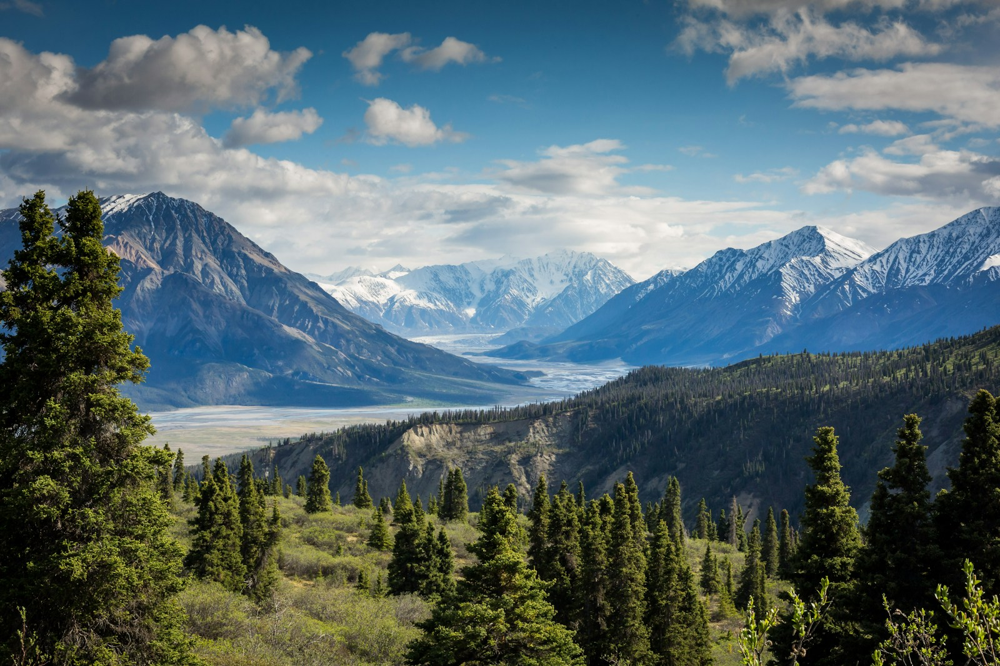
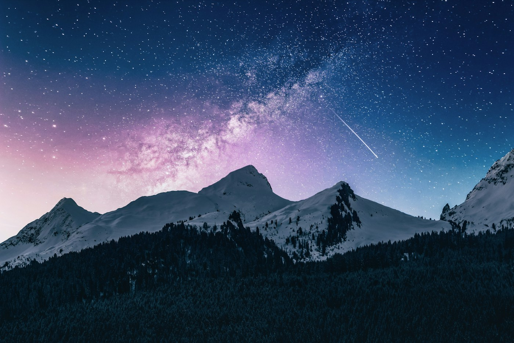

The path is part of the point.
Make space for a ridge walk, a river bend, a pause where the view opens up. Leave the distance records to someone else.

Elsewhere is a travel concept for people who would rather get to know one place than race through ten. Our imagined Upper Valley brings together quiet trails, open tables and time that belongs to you.
There are no real departures here. Just a small demonstration of how thoughtful digital experiences can turn curiosity into a journey.
EXPLOREMake space for a ridge walk, a river bend, a pause where the view opens up. Leave the distance records to someone else.
Imagine a morning market, a pottery table and a meal that takes its time. Small encounters give a journey its texture.
Our planner leaves each day with room to breathe. A little less in the itinerary can leave a little more in the memory.
Build a fictional three-day journey through the Upper Valley. Pick a day, then add experiences. Each day has a gentle six-hour activity limit.

A concept for a different kind of travel brand.
Imagined by Avalon Creatives Group.